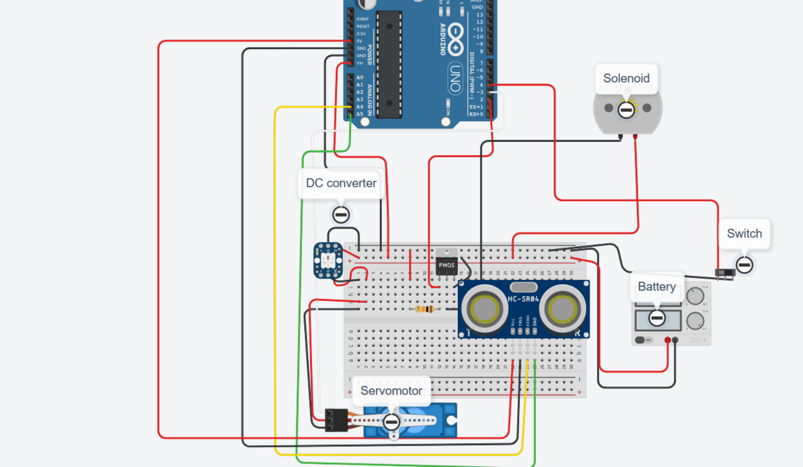

Electromechanical Robot Project

This page highlights my electrical systems role on a robot project, with emphasis on circuit work, integration, troubleshooting, and supporting a functional mechanical-electrical design.
Project Overview
The project involved building and testing a robot system that required electrical hardware to work reliably with the mechanical structure and controls. The goal was to support robot operation through organized wiring, circuit understanding, and practical system integration.
My Role
I focused on the electrical side of the robot, wiring support, component integration, testing, and troubleshooting issues that affected system performance. My role connected the robot's physical design with the electronics needed to make it operate.
Skills and Tools Used
Soldering, electrical troubleshooting, wiring and component integration, system testing, mechanical-electrical design collaboration.
What I Learned
This project strengthened my ability to work across mechanical and electrical systems, diagnose integration problems, and think through how circuit decisions affect the reliability and behavior of a physical robot.

The video above shows the electrical system initiation and test. It shows the servo motor swinging from left to right, demonstrating that the Arduino can actuate it based on the controls program.
The second thing shown is the piston actuating, with the clicking indicating that the air supply is being turned on and off.
At the end, you can see me clicking the switch, with the “1” turning on and off. This switch is mounted on a wheel to count its rotations. Each time the wheel completes a rotation, it clicks the switch, which is used to calculate the distance traveled.